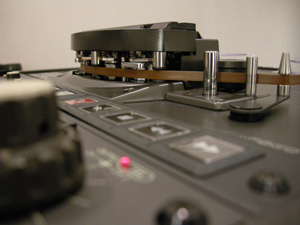

Audio Preservation
The audio preservation program addresses the task of safeguarding the New York Public Library’s collection of sound recordings through a multifaceted approach of conservation and reformatting. The audio preservation staff utilize a variety of conservation treatments, including cleaning, repair, stabilization, and re-housing to promote both optimal signal extraction and the long-term safety of the sound carriers themselves. The media on which sound recordings are produced often are composed of materials that are both physically vulnerable and chemically unstable. Conservation treatments are performed on a variety of types of carriers including: recordings made on wax compounds, cellulose-acetate, cellulose-nitrate, shellac compounds, metals and metal oxides, paper, polyester and a variety of plastic.
The audio preservation facilities are professionally equipped to accommodate the playback needs of a wide variety of current and obsolete audio formats, as well as to produce archival-quality digital preservation masters and requisite metadata. The studios, program activities, and workflows are designed to meet the preservation reformatting guidelines and best practices established by the International Association of Sound and Audiovisual Archives and the Audio Engineering Society.
The audio preservation program also produces derivative recordings from its preservation masters. These derivatives function as listening copies, allowing researchers to explore the content of NYPL’s historic collection of recorded sound, while at the same time posing no risk to the preservation masters or to the source recordings. These access recordings are available to the public through a variety of venues: at on-site listening facilities; through NYPL’s exhibition and public program series; and, when rights and permissions are secured, this content can be accessed via the web on nypl.org. A fee-based duplication service is available for a limited number of items in the collection, for which the necessary rights and permissions must be secured in advance.
Staff in the audio preservation program also engage in education and outreach to students and professionals, respond to reference inquiries related to audio and audio preservation, and serve on committees of national and international organizations concerned with the preservation of recorded sound.